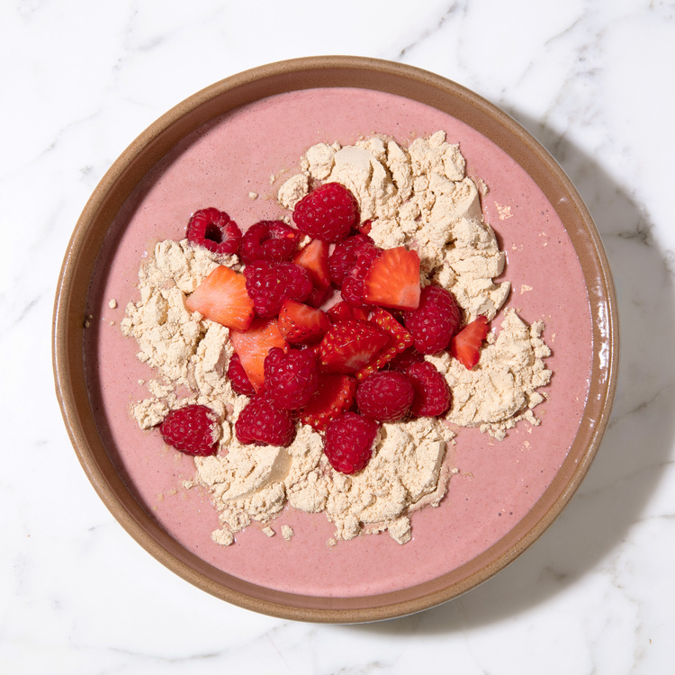

Nutty Pudding

Descripción
El "Nutty Pudding" es un postre nutritivo y delicioso, ideal para quienes buscan una opción saludable y saciante. Esta receta combina leche de nueces de macadamia, nueces molidas, semillas de chía y lino, creando una base cremosa y rica en nutrientes. La adición de cacao, canela, bayas y jugo de granada proporciona un dulzor natural y antioxidantes beneficiosos.
Este pudding no solo es una delicia para el paladar, sino también una fuente de grasas saludables, proteínas y fibra. Su enfoque en ingredientes naturales y mínimamente procesados lo convierte en una opción ideal para una alimentación consciente y enfocada en el bienestar.
Ingredientes
- 50-100 ml de leche de nueces de macadamia
- 3 cucharadas de nueces de macadamia molidas (20% de descuento)
- 2 cucharaditas de nueces molidas
- 2 cucharadas de semillas de chía
- 1 cucharadita de linaza molida (semilla que se muele para hacer harina)
- 1/4 de nuez de Brasil*
- 6 gramos de cacao Blueprint
- 1 cucharadita de lecitina de girasol
- 1/2 cucharadita de canela de ceilán
- 1/2 taza de arándanos/frambuesas/fresas (a elegir)
- 3 cerezas
- 2 oz de zumo de granada
Pasos
- Añadir 50-100 ml de leche de nueces de macadamia a una batidora, ajustando la cantidad en función de la consistencia deseada.
- Añada nueces molidas, nueces de macadamia molidas y linaza molida a la batidora.
- Añada cacao en polvo, lecitina de girasol y canela de ceilán a la batidora.
- Añada a la batidora 3 cerezas, 1/2 taza de las bayas que haya elegido (reserve la otra mitad para la cobertura) y el zumo de granada.
- Bata a velocidad alta durante 3-4 minutos hasta que la mezcla esté suave y cremosa.
- Vierta el pudin en una fuente.
- Cubra con las bayas restantes.
- Si lo desea, añada 30-60 gramos de proteína de guisante para aumentar el contenido proteico.
- Para darle un toque extra, añade una cucharada de edulcorante de trehalosa y una cucharada de miel de Manuka.
- ¡Disfrute de su Pudding de frutos secos!